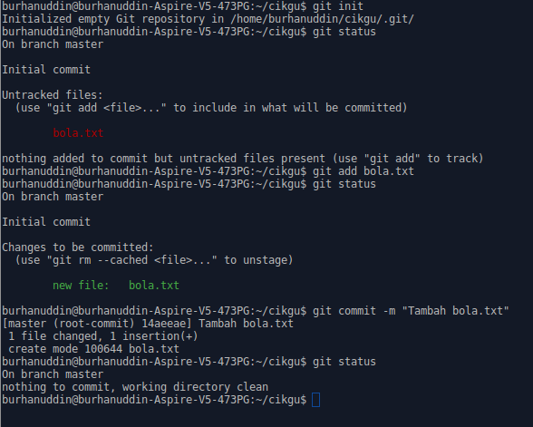

Init
Dalam tutorial ini, kita akan lihat bagaimana untuk menjadikan sesuatu folder sebagai projek yang boleh dijejaki oleh Git. Sebelum menggunakan Git, kita bina satu folder berserta file yang boleh kita gunakan sebagai contoh.
Jika anda menggunakan Windows, memang mudahlah. Klik kanan, pilih New folder.
Namakan folder cikgu. Kemudian, di dalam folder berkenaan, klik kanan, pilih
New Text document, namakan file tersebut bola.txt.
Jika anda menggunakan Linux, taip mkdir cikgu untuk bina folder cikgu.
Kemudian, pergi ke dalam folder dengan menaip cd cikgu. Di dalam folder
berkenaan, bina file dengan menaip touch bola.txt.
Setelah selesai, buka mana-mana text editor. Kemudian tulis di dalam file
bola.txt perkataan berikut:
cikgu suka main bola
dan save.
Selepas ini, saya hanya akan tunjuk command untuk penggunaan Git di terminal. Jika anda menggunakan GUI client, anda boleh teroka software berkenaan untuk mencari command yang sama.
git init
git init ialah command untuk menjadikan sesuatu folder boleh dijejaki oleh
Git. Semasa berada di dalam folder, taip git init. Console akan memaparkan
Initialized empty Git repository in ... bermakna sudah berjaya.
git status
git status ialah command untuk melihat status folder berikut untuk melihat
sama ada wujud perubahan atau tidak. Disebabkan kita baru membina folder dan
file, jika anda menaip git status, Git akan memaparkan ada file yang belum
dijejaki, iaitu file bola.txt.
git add
git add ialah command untuk memberitahu Git bahawa ada perubahan pada sesuatu
file yang perlu ditambah dalam rekod. Cuba taip git add bola.txt, kemudian
taip git status semula. Anda dapat melihat sekarang terpapar new file:
bola.txt bermakna sekarang Git sudah tahu ada file baru.
git commit
git commit ialah command untuk save perubahan tersebut dalam rekod. Taip
git commit --message "Tambah bola.txt"
Perhatikan bahagian message tersebut. Kita boleh menyertakan message sebagai ingatan apakah perubahan yang berlaku pada waktu itu.
Cara yang sama yang lebih ringkas ialah
git commit -m "Tambah bola.txt"
Setelah selesai, taip semula git status. Anda akan perhatikan tiada lagi file
yang berubah.
Jika anda mengikuti tutorial sampai di sini. Terminal anda akan kelihatan seperti ini,

Ketiga-tiga command iaitu git status, git add, dan git commit ialah
command yang akan selalu kita gunakan semasa membuat development.
Command-command yang lain mungkin ada yang terlupa, jadi boleh sahaja rujuk di
mana-mana website.